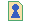

A new web is created by making a symbolic link to the WebWeb script on the server. When the new web is first accessed, the administration page will be displayed until the settings have been accepted.
Note that the current WebWeb server is installed in a secured area. This has the advantage that we can require all users to log in to the WebWeb, guaranteeing that random intruders cannot easily obtain access to the page contents; however, this also means that the administrator of the new WebWeb will need to set up a .htaccess file and htpasswd database.
The web administrator can access the administration page at any other time by clicking on the administration icon:

If icons are turned off, the "Administration" toolbar entry provides the same function.